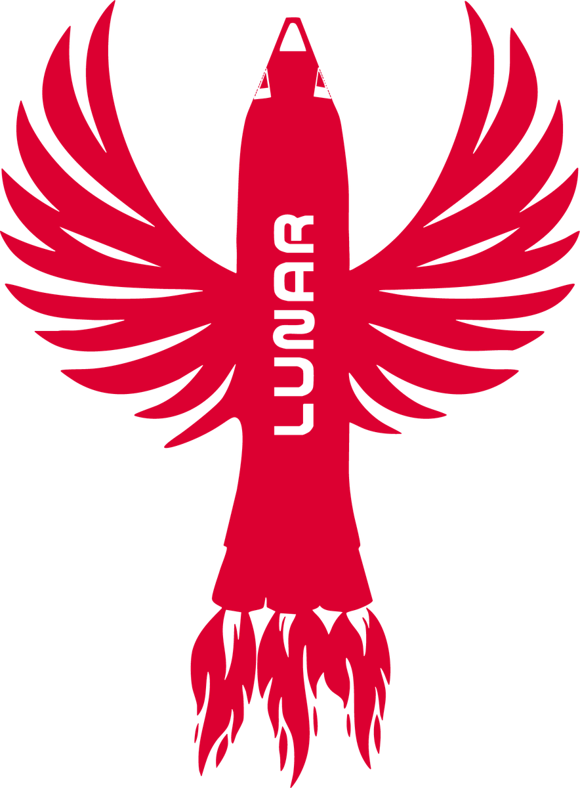

01
NASA Student Launch 2027 — USLI Launch Vehicle
Leading the launch-vehicle subteam through architecture, CAD, mechanical integration, work coordination, and the transition from conceptual design to manufacturing, assembly, test, and flight. The vehicle must integrate the autonomous SCANR payload while preserving access, retention, recovery, avionics, structural, and mass-property requirements.
Design workflowFull- and subscale OpenRocket and SolidWorks models
System targetRecoverable vehicle · 4,000–6,000 ft AGL
Program cadenceProposal through reviews, demonstration flights, and launch
My contribution
- Lead the launch-vehicle subteam and coordinate vehicle-team technical work.
- Guide vehicle CAD, mechanical architecture, subsystem packaging, and interface reviews.
- Coordinate with Payload, Avionics, Recovery, Manufacturing, and team leadership.
Current work
Full- and subscale OpenRocket and SolidWorks models, geometry comparison, payload and subsystem accommodation, and manufacturing planning for the 2026–2027 program.